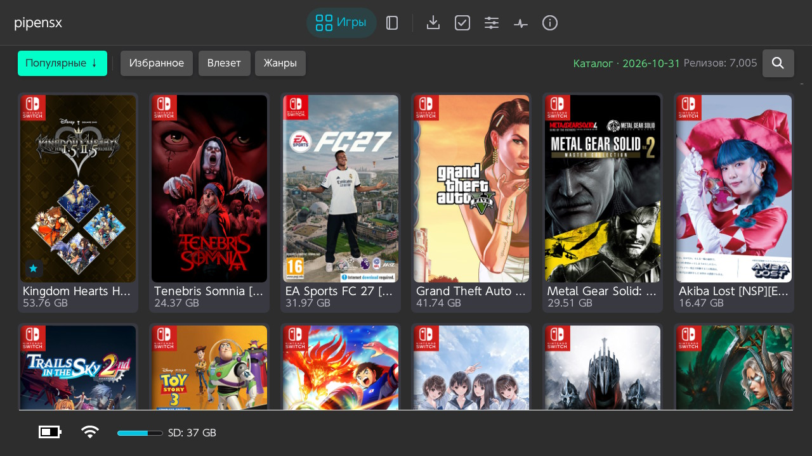
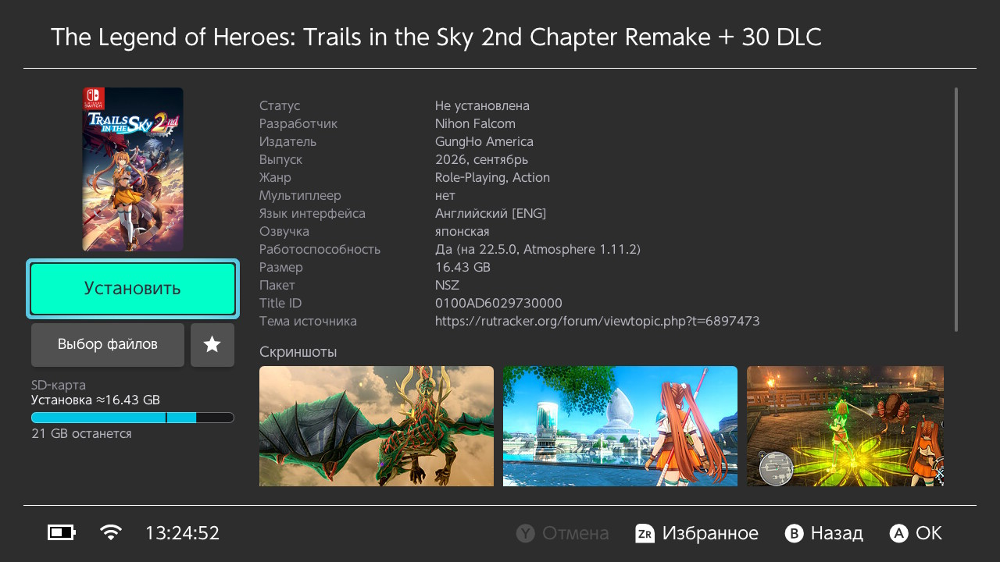
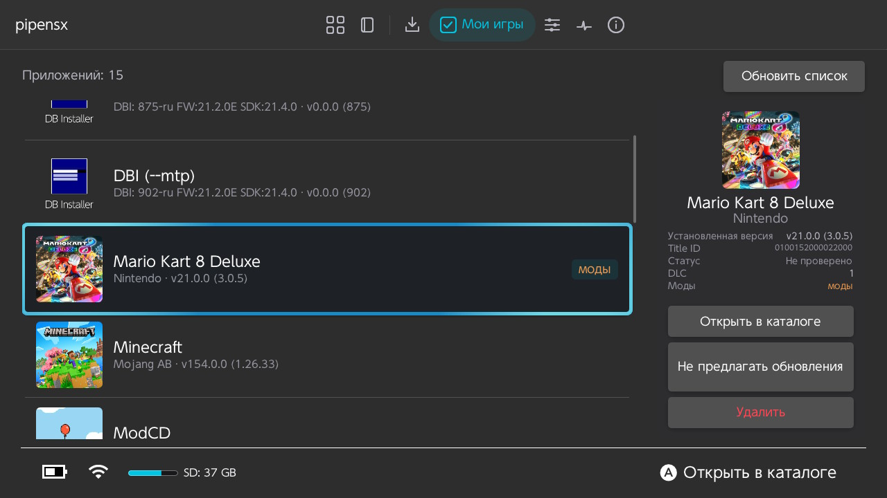

Direct Streaming Installation
Streams package data directly into NAND or SD card storage while downloading. Eliminates the requirement to keep 30 GB free for the archive plus 30 GB for the installed game.
Download games, updates, DLC and fan ports directly on your console. Installs NSP, NSZ and XCI packages on the fly without needing twice the free storage space.
Streams package data directly into NAND or SD card storage while downloading. Eliminates the requirement to keep 30 GB free for the archive plus 30 GB for the installed game.
Native support for TorBox, TorrServer, Real-Debrid, and AllDebrid. Downloads cached torrents over encrypted HTTPS connections at full line speed.
Complete standalone C11 BitTorrent core with libutp, mainline DHT, tracker scrape, piece integrity hashing, and optimized SD card write buffering.
Inspect installed games, base builds, DLCs, and version numbers. Automatically detects PC game ports and deploys LayeredFS game files.
Fluid 60 FPS interface built on Borealis. Full support for Joy-Cons, Pro Controllers, D-Pad, analog stick scrolling, and capacitive touchscreen.
No telemetry, no hidden accounts, and zero proprietary trackers. Source code is open and scanned via GitLab Secret Detection and SAST.

Fast catalog grid with cover art, release details, genres, and instant search.

Inspect version numbers, descriptions, screenshots, and choose download sources.
Track transfer speed, peer count, ETA, download categories, and installation progress.

Direct sidebar actions: view updates, inspect DLC, uninstall files, and launch games.
Plug your Switch into your computer using a standard USB-C data cable.
Open DBI from the Homebrew Menu and select "Run MTP Responder".
Open the mounted "Switch" storage drive on your PC and navigate to "1: External SD Card" -> "switch".
Create folder "pipensx" and place pipensx.nro into it: /switch/pipensx/pipensx.nro.
Press [X] on your Nintendo Switch to stop MTP Responder. pipensx will now appear in your Homebrew Menu.
Safely power off your Nintendo Switch and remove the microSD card, or boot into Hekate and choose Tools -> USB Tools -> SD Card.
Connect the microSD card to your computer via card reader.
Copy pipensx.nro into the switch folder: SD:/switch/pipensx/pipensx.nro.
Reinsert the card into the console and boot into Atmosphère CFW.
Do NOT launch pipensx from the Album icon (Applet Mode). Applet mode restricts memory to ~400 MB, causing out-of-memory errors during torrent decompression. Hold [R] while launching any installed game on the Switch home screen to launch the Homebrew Menu in full RAM mode (3.2+ GB).
| Target Platform | Nintendo Switch (V1, V2, Lite, OLED) running Atmosphère CFW |
|---|---|
| Executable Format | Homebrew NRO (.nro) |
| Memory Ceiling | Title Override mode recommended (3.2 GB RAM available) |
| Supported Packages | NSP, NSZ (Zstandard compression), XCI |
| Network Protocols | BitTorrent, uTP, DHT, HTTPS (TorBox, TorrServer, Real-Debrid) |